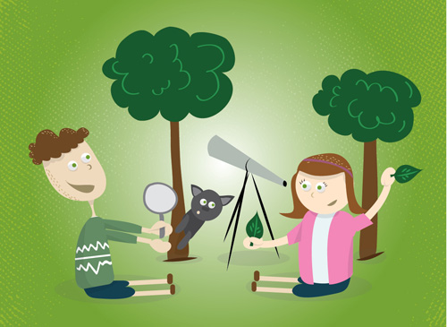

En esta plataforma podras observar un video y jugar de manera educativa, de esta forma reforzarás tus conocimientos y responsabilidades como estudiante.
Se desarrolló un juego dirigido a los estudiantes, en el cual tendrás que responder correctamente preguntas sobre el video que se te dejara en la siguiente descripcion (VIDEO) . También creamos una Leaderboard en la cual podras observar tu puntaje. Espero que te guste!!
¡Mucha Suerte! 😊💪
